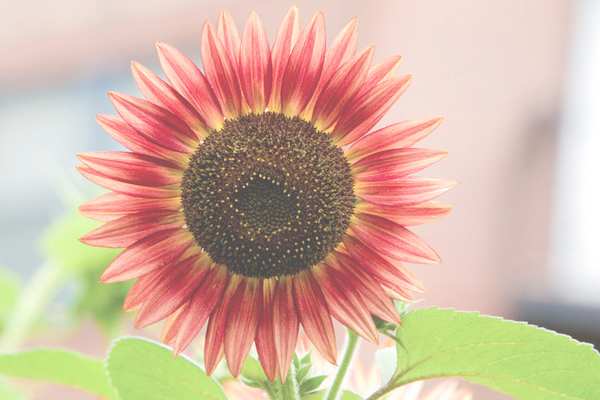
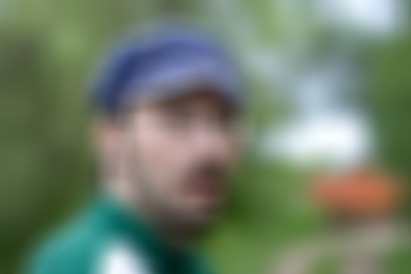
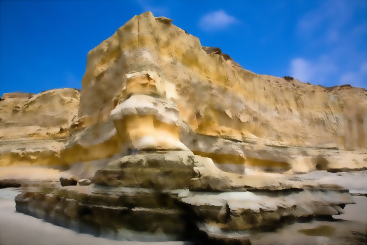
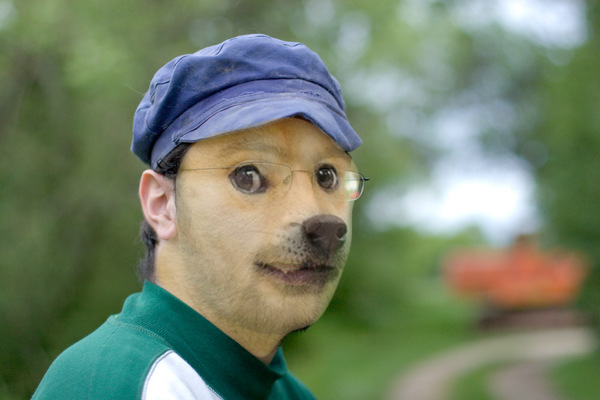

COS426 Assignment 1Image Processing — Batch Mode
Switch to: Interactive Editor
- (0.0) Brightness
- (0.5) Contrast
- (0.5) Gamma
- (2.0) Histogram equalization
- (0.5) Saturation
- (1.5) White balance
- (2.0) Histogram matching
- (1.0) Gaussian
- (0.5) Sharpen
- (1.0) Median filter
- (2.0) Bilateral filter
- (0.0) Quantize
- (0.5) Random dither
- (1.0) Floyd-Steinberg dither
- (1.0) Ordered dither
- (1.0) Sampling
- (0.5) Translate
- (0.5) Scale
- (1.0) Composite
- (3.0) Morph
Brightness
This feature was implemented by the course staff. I used it as an example of how to loop over the pixels in an image.
Here is an example output where the image is made brigher with the luminance slider set to 0.3:
{kind=link}

Here is an example output where the image is made darker with the luminance slider set to -0.5:
{kind=link}

I did not encounter any particular challenges in implementing this.
You can include as many results as you want, but please at least include the following results:
Contrast
Contrast gets each pixel in the image and changes each color channel by the formula: value = (value - 0.5) * (tan ((contrast + 1) * PI/4) ) + 0.5 where value is the color channel data.
Push_Image=leaves.jpg&Contrast=-1

Push_Image=leaves.jpg&Contrast=0.7
Push_Image=leaves.jpg&Contrast=-0.8
{kind=link}
{kind=link}
{kind=link}
Gamma
Gamma changes each pixel in the image by applying a gamma correction using the given gamma value. To apply the correction, I just mulitplied each color channel by the given gamma value.
Push_Image=mesa.jpg&Gamma=1
Push_Image=mesa.jpg&Gamma=-1.6

{kind=link}
{kind=link}
Histogram equalization
Histogram equalization filter creates a luminance map of each pixel in the image's luminance, which is then sorted.
Using the sorted luminosity map, we reassign each pixel's luminance to the given formula: (cdf(x) * (L - 1)) / (L-1). L is the number of unique luminosity levels in the image and cdf is a sorted map of the gray levels and cumlative count of each level.
Push_Image=flower.jpg&Histogram_Equalization=
Push_Image=leaves.jpg&Histogram_Equalization=
{kind=link}
{kind=link}
Saturation
Saturation applies the formula: [pixel = pixel + (pixel - luminance) * ratio] to each color channel for each pixel in the image. Luminance is calculated using this formula which is given:
[const luminance = 0.2126 * pixel.data[0] + 0.7152 * pixel.data[1] + 0.0722 * pixel.data[2]].
Push_Image=leaves.jpg&Saturation=1
Push_Image=leaves.jpg&Saturation=-0.5
{kind=link}
{kind=link}
White balance
White balance filter adjusts the white balance of the image by using the Von Kries method. First, I converted the image from RGB to the LMS color space by using the methods provided: rgbToXyz() and xyzToLms().
Then, I divided each channel in the pixel's LMS channels by the LMS channels of white, and converted the pixel back to RGB.
Push_Image=town.jpg&White_Balance=[0.5,0.5,0.5,1]

![Push_Image=town.jpg&White_Balance=[0.5,0.5,0.5,1]](batch.html?Push_Image=town.jpg&White_Balance=[0.5,0.5,0.5,1]){kind=link}
Histogram matching
Histogram matching works similarly to histogram equalization. I used the same method of making a luminance map and sorting the contents to a cdf map for the reference image pixel data.
Then, I did the same thing with the image in which the filter is being applied to. Using the two maps, I equalized the pixels of the image using the lumanance values from the cdfMap of the reference image.
Push_Image=leaves.jpg&Push_Image=flower.jpg&Histogram_Match=
{kind=link}
Gaussian
Gaussian goes through each pixel in the image and uses the filter window size of [-winR, winR] where winR = Math.round(sigma * 3). Sigma is a given value. The gaussian filter is then applied to
each pixel's color channel by doing: colorChannel = colorChannel + matrix[pos] * colorChannelData. colorChannel is updated as you go through the gaussian filter kernel. The resulting new pixel uses
each added colorChannel result divided by the weight sum so the average color does not change. All of this is done first horizontally
to the original image, putting the new pixels into a new image. Then, that new image is put through the same filter process, however, this time the kernel is applied vertically through the image's pixels.
The new pixels from the vertical application are put into another new image which is the original image with the fully applied gausisan filter.
Push_Image=leaves.jpg&Gaussian=4

Push_Image=man.jpg&Gaussian=7

{kind=link}
{kind=link}
Sharpen
Sharpen applies a given sharpen filter kernel: [[-1, -1, -1], [-1, 9, -1], [-1, -1, -1]] to each corresponding color channel of each pixel of the image. Each colorChannel's data needs to be
divided by the total weight to normalize the pixel values (ie: average color does not change).
Push_Image=leaves.jpg&Sharpen=
Push_Image=woman.jpg&Sharpen=
{kind=link}
{kind=link}
Median filter
The median filter takes each pixel's color channels' values within the window (x - winR, y - winR) to (x + winR, y + winR) and sorts each color channel data. This window is also known as the pixel's neighborhood.
The pixel is then set as the median value of the neighborhood's pixels' corresponding color channel values.
Push_Image=leaves.jpg&Median=3
Push_Image=leaves.jpg&Median=5
Push_Image=leaves.jpg&Median=8
{kind=link}
{kind=link}
{kind=link}
Bilateral filter
Bilateral Filter takes each pixel in the image and each pixel in the window size of (Math.round(2*max(sigmaR,sigmaS))*2 + 1) and finds the value of the spatial distance and color distance between the two pixels.
These values are calculated using the given formula in precept 1. The weight is then calculated using e^(spatialDistance + colorDistance) and applied to the pixel color channel. This application is done
to each original pixel by the number of pixels within the winR sized window. The outputed pixel is the sum of each application to each color channel.
Finally, each newly summed color channel is divided by the sum of the weights for normalization and the pixel is clamped before getting set into a returned, new image.
Push_Image=mesa.jpg&Bilateral=4;2
Push_Image=mesa.jpg&Bilateral=5;3

{kind=link}
{kind=link}
Random dither
Random dithering changes each pixel's color channel by adding a random value: (Math.random() - 0.5), then quantizing the color channel's value with: Math.round(pixel.data[c]) in the image.
Push_Image=mesa.jpg&Random=
{kind=link}
Floyd-Steinberg dither
Floyd-Steinberg dither gets each pixel's data and each of its neighboring pixels (immediately east, south east, south, south west relative to the orignial pixel). The original pixel is quantized
and the quantization error is defined as the difference beteween the original pixel's color channel data and the new quantized value. Each of the neighboring pixel's color channels' values
are added to a (given fraction * quantized error). The new pixel values are then set to their original positions in the image.
Push_Image=mesa.jpg&Floyd-Steinberg=
{kind=link}
Ordered dither
Ordered dither uses a given kernel "d". By following the psudo code from precept 1, I was able to implement the function. As defined in the slides, m = 4, i = xPosition mod m, and j = yPosition mod m.
By going through all the pixels in the image, we are able to caluclate err = (currentPixel color value) – floor_quantize(currentPixel color value)) and threshold = (d(i, j)+ 1) / (m^2 + 1).
If the err > threshold, the pixel data is quantized and rounded up, else, the pixel is quantized and rounded down.
Push_Image=mesa.jpg&Ordered=

{kind=link}
Sampling
I followed the bilinear sampling filter slide in Precept 1. Using the formula on the slide, a new pixel is able to be defined. Important varibles to note are:
ceilingX = Math.ceil(x) = x2;
ceilingY = Math.ceil(y) = y2;
floorX = Math.floor(x) = x1;
floorY = Math.floor(y) = y1;
Gaussain sampling goes through the window: (-winR, -winR) to (winR, winR) and using the gaussian value defined by the given equation: Math.exp(-(xPos**2)/(2*sigma**2)),
changes the pixel value to the desired gaussian filter value. The pixel's color channel is then divided by the sum of all gaussian values to normalize the values before
returning the new pixel.
Point sampling was given.
Translate
Translate moves the pixel a given x spaces and y spaces over by adding the given offset to the original pixel's position. Note that there is a bounds of the original image height and
width where the image can be translated over.
Y
Push_Image=flower.jpg&Translate=-317;-182;point
Push_Image=flower.jpg&Translate=-317;-182;bilinear

Push_Image=flower.jpg&Translate=-317;-182;gaussian
{kind=link}
{kind=link}
{kind=link}
Scale
Scale is given a ratio which is multiplied by the original image's width and height to find the new scaled image from that window of the original image.
Push_Image=mesa.jpg&Scale=2.03;point
Push_Image=mesa.jpg&Scale=2.03;bilinear

Push_Image=mesa.jpg&Scale=2.03;gaussian
{kind=link}
{kind=link}
{kind=link}
Composite
Composite filter gets the background and forground's pixels and calculates the new pixel's color channel data using the given formula:
color channel data = alpha * (foreground piixel's color data) + (1 - alpha) * (background piixel's color data) where alpha is the foreground pixel's alpha.
Push_Image=man.jpg&Push_Image=doge.jpg&Push_Image=alpha.png&Get_Alpha=&Composite=

{kind=link}
Morph
Morph was the most complicated to implement.
Firstly, I had to get the warped lines array which contain the information from this given formula: line = (1 – alpha) * background_lines[i] + alpha * foreground_lines[i]
where i is just the position in the given lines.initial dataset.
Then, I called my morph function with the intial image, then the final image and combined both outputed images to get the final morphed image. Note that the variable names correspond to the given diagram in precept2 slide 12.
The morph function implements the given steps from precept2. To summerize, the warp function first calculates the projection of line PX onto line PQ, then the length of the line SX. Then, it calculates the unknown X' using the
given equation on slide 14. The distance is then calculated accourding to the value of the projection of PX onto PQ (see slide 13). the weight is calculated using the given formula on slide 12: (length^p/(a+distance))^b, where p = 0.5,
a = 0.01 and b = 2. The averages are then calculated using the rounded value of the (sum of X' coordinates multiplied by the calculated weight). Using these averages, morph makes a new pixel at these coordinates.
Push_Image=trump1.jpg&Push_Image=trump2.jpg&Morph=(0,1,0.1)
){kind=link}
Collaboration
N/A